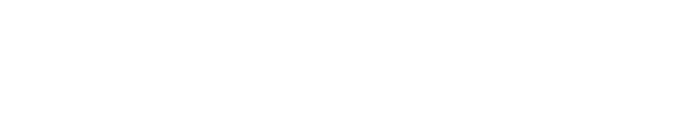

Значения татуировок
Символы, образы и их возможные значения.
Найдите идею и смысл для будущей татуировки.Найдите смысл своей тату
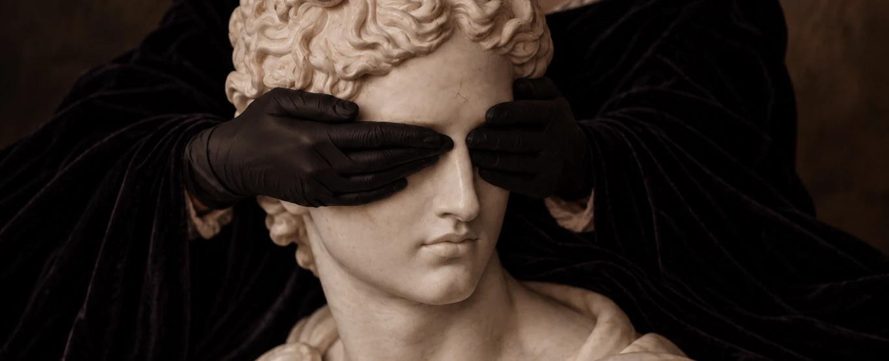
Значения татуировок
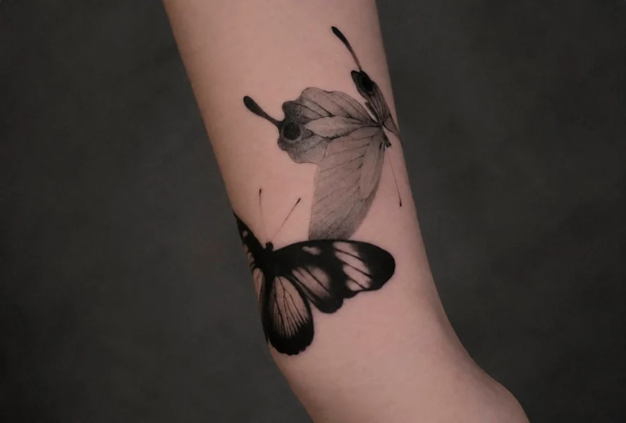
Бабочка
Бабочка символизирует трансформацию, свободу и развитие. Её превращение из гусеницы в бабочку часто связывают с переменами, новым этапом жизни и внутренним ростом. В разных культурах бабочка также ассоциируется с душой, лёгкостью и красотой...
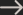
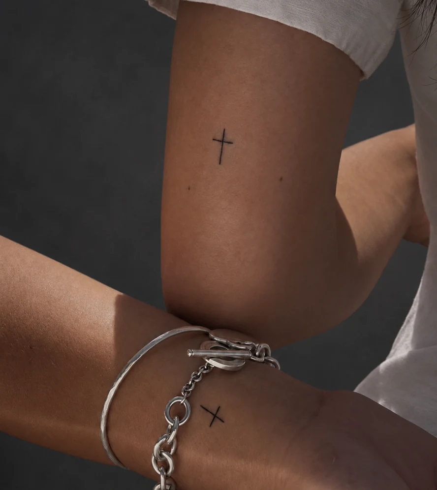
Крест
Крест — один из самых древних и узнаваемых символов, который встречался в разных культурах задолго до появления христианства. В христианской традиции он связан с распятием Иисуса Христа и символизирует веру, жертвенность и спасение. На протяжении истории крест также использовали в украшениях и личных предметах как знак защиты, духовной связи и принадлежности к вере. Сегодня значение такой татуировки может быть как...
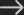
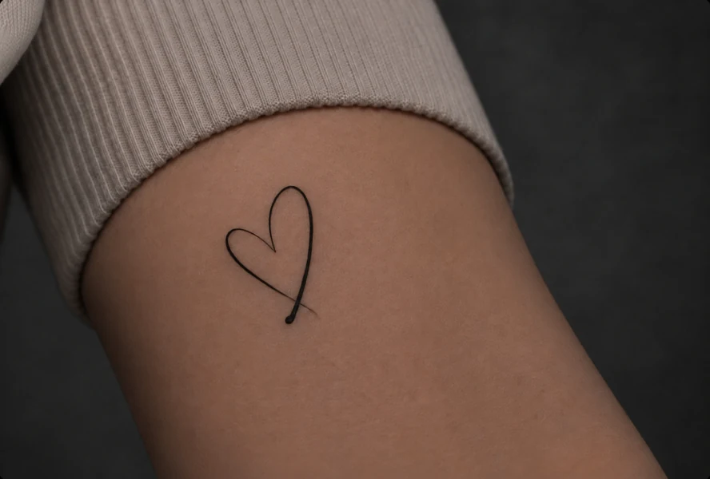
Сердце
Сердце символизирует любовь, чувства и эмоциональную связь — пожалуй, это одно из самых универсальных изображений с таким значением. Оно может быть посвящено любимому человеку, семье, отношениям или важному периоду жизни. В зависимости от изображения и дополнительных элементов... 
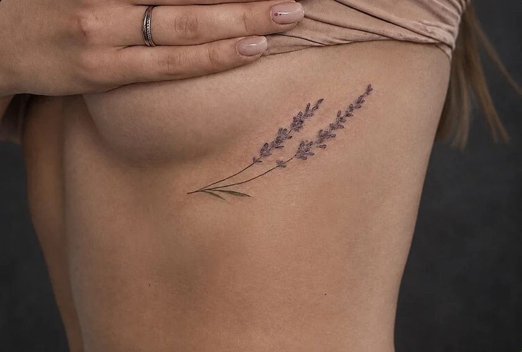
Лаванда
Лаванда символизирует спокойствие, чистоту, гармонию и эмоциональное равновесие. На протяжении истории это растение ценили за характерный аромат и связывали с очищением, восстановлением и умиротворением. В татуировках веточка лаванды может означать... 
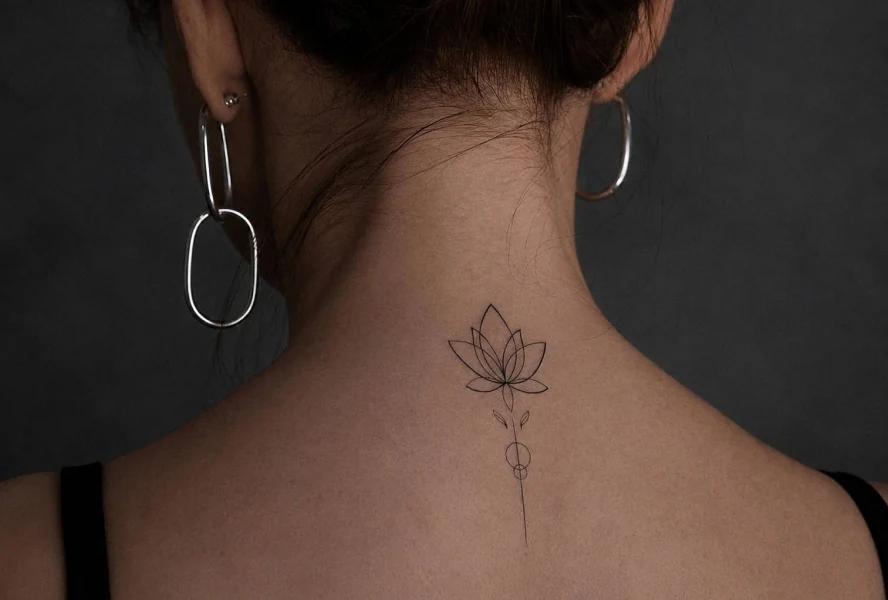
Лотос
Лотос символизирует чистоту, возрождение, просветление и способность преодолевать сложные обстоятельства. Особое значение этого цветка связано с тем, что он растёт в мутной воде, но поднимается над её поверхностью чистым и красивым. Поэтому лотос часто воспринимают...
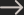
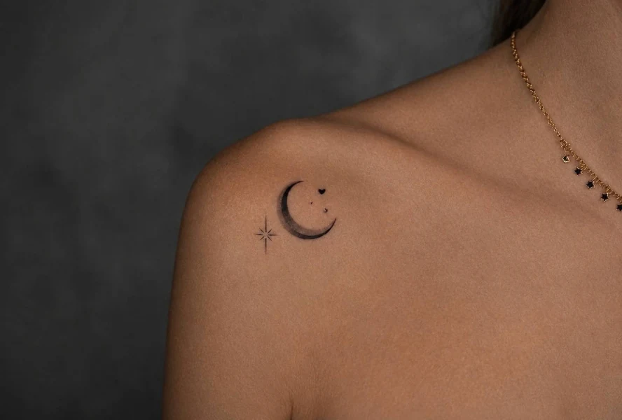
Луна
Луна символизирует интуицию, циклы, трансформацию и скрытые грани личности. Во многих культурах её фазы связывали с течением времени, плодородием, смертью и обновлением. Поскольку луна постоянно исчезает и возвращается, она стала естественным образом возрождения — напоминанием о том, что...
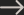
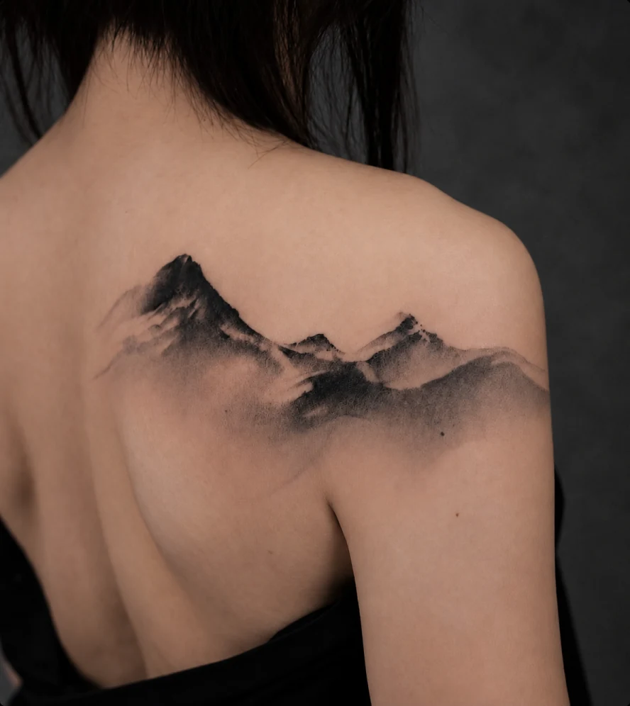
Горы
Горы символизируют стойкость, стабильность, перспективу и стремление к чему-то большему. Путь к вершине часто воспринимается как метафора преодоления трудностей, достижения целей и личностного роста. Горы также тесно связаны с природой, путешествиями, свободой и ощущением независимости. Для каждого человека такой образ может иметь собственное значение — от любви к определённому месту до напоминания о пройденном...
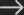
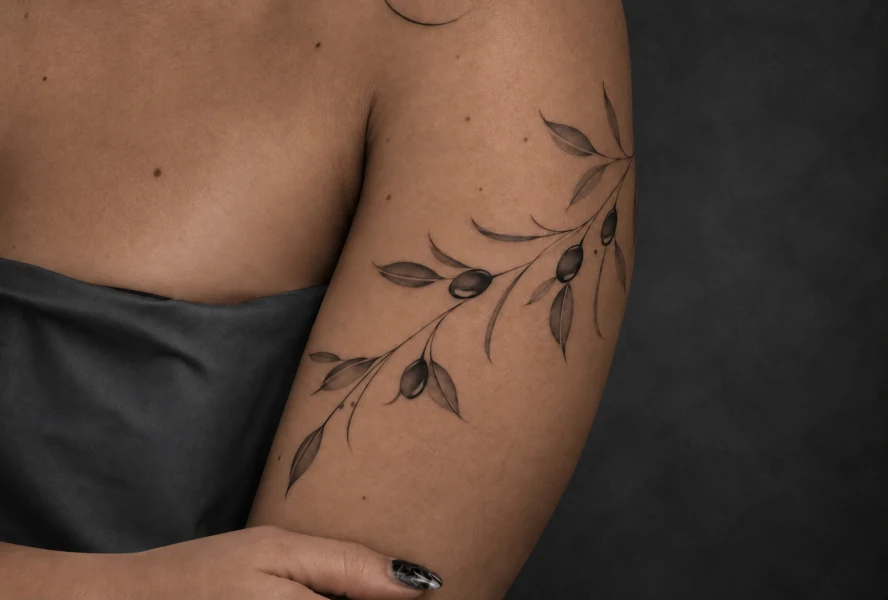
Оливковая ветвь
Оливковая ветвь символизирует мир, примирение, надежду и завершение конфликта. Эта ассоциация появилась ещё в древних культурах: в Древней Греции оливковое дерево считалось священным, а его ветви связывали с победой, честью и благополучием. Со временем... 
Пока нет татуировок в этой категории.
ЕСТЬ ИДЕЯ?
ДАВАЙТЕ ОБСУДИМ.
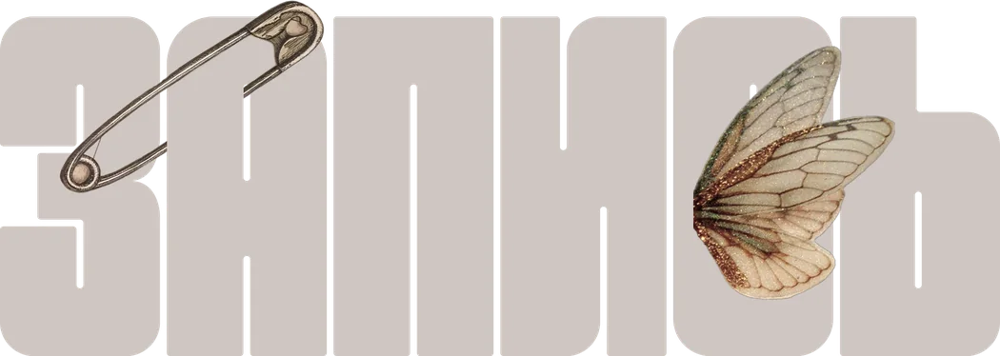